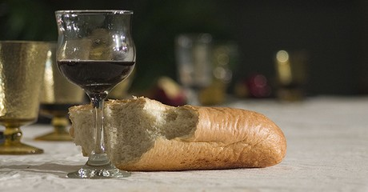

Wat zeg je bij het breken en delen van brood en wijn?
Een zekere verlegenheid bij het uitdelen en ontvangen van brood en wijn tijdens het vieren van de Maaltijd van de Heer komt geregeld voor. Wat zeg je als je iemand brood aanreikt? En bij de beker? Zeg je uberhaupt iets of reik je de beker in stilte aan?
Ook bij het ontvangen van brood en wijn speelt soms gene. Of er gewoon niet bij stil staan dat je iets zou kunnen zeggen, laat staan wat dan. Als er iets gezegd wordt, is dat in de kerk vanouds meestal "amen". Maar moet dat ook? Mag je ook "dank je" zeggen, of er het zwijgen toe doen? In dit artikel vat ik deze vragen op als vragen naar de etiquette van de Maaltijd van de Heer. Hoe verhoudt die zich tot de etiquette van bijvoorbeeld onze opvoeding? Het zijn onze opvoeders die ons hebben geleerd om in dagelijkse rituelen van geven en ontvangen "fatsoenlijk" te zijn en (dus) "dank u wel" te zeggen. De verhouding tot de in onze wereld heersende etiquette is een kwestie die de eerste christenen al bezig hield. Hieronder beperk ik me tot enkele gedachten van Paulus, die kunnen helpen om onze eigen positie te verhelderen en na te gaan hoe we de vieringen van onze christelijke geloofsgemeenschappen vorm zouden willen geven.
Maaltijden van de gemeente
Op Witte donderdag viert de kerk wereldwijd de inzetting van de Maaltijd van de Heer. Een van de lezingen die dan vaak aan bod komt, is een gedeelte uit hoofdstuk 11 van de eerste brief van Paulus aan de Korintiers. Met het oog etiquette is dat een boeiend gedeelte. Het is daarbij goed om te bedenken dat Paulus niet schrijft over een kerkdienst zoals wij die kennen en ook niet louter en alleen over Jezus" laatste Avondmaal, hoewel wat daar gebeurt voor hem wel degelijk maatgevend is. Paulus gaat vooral in op de wijze waarop de geloofsgemeenschap van Korinthe samen maaltijd houdt. Dat is een maaltijd zoals allerlei groepen die in de eerste eeuwen van onze jaartelling in het gebied rond de Middellandse Zee gewoon waren te houden. Men kwam samen, genoot een maaltijd, dronk een beker wijn, en voerde gesprekken.
Nieuwe kosmos, nieuwe etiquette
Paulus gaat in op hoe het er bij de christelijke gemeenschap in Korinthe aan toe gaat als men samenkomt. Met name benoemt hij hoe deze gemeente met voedsel omgaat, dus met de goede vruchten van de aarde. Hij signaleert dat de afzonderlijke leden van de gemeenschap niet delen in elkaars overvloed en niet delen in elkaars tekort. Ieder eet slechts van wat zij of hij zelf heeft meegebracht. Daarover betoont Paulus zich, zacht gezegd, ontstemd. Deze manier van doen past niet bij het nieuwe tijdperk dat met Christus en zijn dood en opstanding voorgoed is doorgebroken.
Het besef van een volstrekt nieuw tijdperk, ook wel "nieuwe kosmos", is een wezenlijke dimensie van Paulus" missie. We moeten daar wat uitgebreider bij stil staan, omdat zijn gedachten over de etiquette aan tafel er direct mee samenhangen: bij de nieuwe realiteit van Christus past een nieuwe etiquette.
Deelgenoot: pijn en vrede
De dood van Christus markeert volgens Paulus het einde van een tijdperk. Met de dood van Jezus is ook de oude kosmos - de oude wereldorde met alles wat daarbij hoort - gekruisigd. Dat gaat aan geen mens voorbij, ook niet aan Paulus zelf; ieder groeit op in een bepaalde culturele orde en raakt daarmee verweven. Hoe bijvoorbeeld in een bepaalde cultuur (of dat nu de cultuur van "het Westen" of die van de eigen familie is) met voedsel wordt omgegaan, welke rituelen er zijn, daar zijn we zelf onderdeel van. Daarom raken veranderingen iedereen. Zelf schrijft Paulus in de brief aan de Galaten dat hij de "littekens van Christus" in zijn lichaam voelt. Dat heeft met het volgende te maken. Allerlei categorieen die hielpen om de wereld beheersbaar in te delen, om onderscheid te maken tussen "wij" en "zij", hebben in de nieuwe schepping hun relevantie verloren. Het nieuwe treft niet in de laatste plaats - wat wij nu noemen - gender en etniciteit: het gaat niet om Jood zijn noch om Griek zijn, niet om man of vrouw, maar het gaat om "een nieuwe schepping." De verregaande consequenties daarvan betekenen niets minder dan een verlies-ervaring.
Tegelijk is er uitzicht op iets anders en ook daar deelgenoot van zijn. Wie zich daadwerkelijk naar de nieuwe schepping voegt, zal ook een nieuwe dimensie van God gewaar worden. Dat is althans wat Paulus de geloofsgemeenschap van de Galaten toewenst of waar hij God om bidt: "Laat er vrede en barmhartigheid zijn voor allen die bij deze maatstaf blijven" (Galaten 6, 14-16).
Tussentijd
De nieuwe schepping beschouwt Paulus als een tussentijd. De vervanging van de oude kosmos, de oude verhoudingen in deze wereld, door een nieuwe schepping is nog niet afgerond. De nieuwe schepping is nog geen feit, maar een voortgaand proces. En dus kan het zijn dat bepaalde manieren van doen nog duidelijk wortelen in de oude kosmos. Die manieren van doen kunnen zelfs de boventoon voeren, zoals aan tafel bij de geloofsgemeenschap van Korinthe. De manier waarop zij samen eten kun je met de beste bedoeling geen "maaltijd van de Heer" noemen, meent Paulus. Waar Christus heerst, waait een andere wind. Maar die nieuwe schepping is hier ver te zoeken.
Lichaam van Christus
Het meedoen in de nieuwe schepping, stelt Paulus voor als het delen in het lichaam van Christus. Dat lichaam is voor Paulus een kosmische realiteit: een werkelijkheid die alle verbanden tussen mensen onderling, en tussen mensen en God en de aarde betreft. En dat gaat dus ook heel concreet over voedselverdeling. In Christus is er een nieuwe verwevenheid. Die begint met danken - zoals ook Jezus dat deed op de avond voor hij werd uitgeleverd als een misdadiger. En er is het delen in zijn pijn als wij op onze beurt ons brood breken, zoals er ook het verlangen is naar barmhartigheid en vrede.
Vanouds heeft de kerk gewezen op de sacramenten - protestanten met name op doop en avondmaal - als een weg om deel te krijgen aan de nieuwe verwevenheid. Het zijn manieren van doen om deelgenoot te worden van dat nieuwe, dat grotere verband: het lichaam van Christus. Vaak is daarbij opgemerkt dat het een beweging van geloof is. Het heeft niet zoveel zin om rituelen op te tuigen als je niet gelooft dat je deel krijgt aan de nieuwe schepping, die in Christus voorgoed begonnen is. Dan kun je net zo goed thuis eten.
"Ik geloof" - etiquette van de communie
Zullen we worden wat we in Christus ontvangen? Zal deze geloofsgemeenschap meer en meer lichaam van Christus worden: belichaming van de nieuwe schepping? Via enkele gedeelten uit de brieven van Paulus zijn we bij deze vragen uitgekomen. Ze zouden richting kunnen geven aan de etiquette bij de communie: het breken en delen van brood en wijn. Of je nu uitreikt of ontvangt, dragend is - nogmaals: in deze lijn - het geloof dat ieder, vrouw en man, Jood en Griek, arm en rijk, deel krijgt aan de nieuwe schepping die in Christus is doorgebroken. Dat heeft consequenties. Het is een weg om te gaan. Daarom is "dank je wel", hoe fatsoenlijk ook, misschien wat pover. Niet omdat het niet netjes is, maar omdat het een soort belijdenis is om hier te staan op dit moment, om hier en nu de handen op te houden om precies dit te ontvangen. "Amen" als respons past daarbij: een hardop uitgesproken instemming. Die instemming wijst ook vooruit naar wat onmiddellijk volgt: ja, met dit brood wil ik mij voeden; ja, deze beker wil ik aanpakken om eruit te drinken. Amen is een bekrachtiging van wat een mens te boven gaat.
Een van mijn gemeenteleden zei bij het ontvangen van het brood steevast: "ik geloof". Wat ik bij het uitreiken had gezegd - "lichaam van Christus", "lichaam van Christus, gebroken voor jou", "brood van het leven", "brood uit de hemel" - maakte daarbij geen verschil. Maar of hij zijn geloof had beaamd als ik "alsjeblieft" had gezegd, waag ik te betwijfelen. Met zijn "ik geloof" bepaalde hij mij bij het mysterie dat ons voedt en verbindt.
Mystagogie
Moet je dan iemand corrigeren die "dank je wel" zegt? Tijdens de communie niet, lijkt mij. Het gaat hier over mystagogie, inwijding in wat ten diepste een mysterie is. Mystagogie vindt doorgaans na afloop plaats, omdat deze benadering er recht aan probeert te doen dat we ons dingen eigen maken door ze te doen en te ondergaan. Iemand tijdens de communie corrigeren heeft weinig zin en verbreekt het "nieuwe verband" niet minder dan "dank je wel" dat doet. Zoiets kun je organiseren. En kan een gesprek tijdens de koffie na afloop van de viering ook niet een mystagogisch moment zijn? Terugkomen op wat je samen deed, meemaakte en eraan beleefde? Positief aan "dankjewel" is dat er kennelijk een besef is dat er interactie gaande is, geven en ontvangen. Dat kan een aanknopingspunt zijn voor verdieping. In de "nieuwe schepping" is er wederkerigheid binnen het lichaam. Niet wijzelf, maar dit brood en deze beker verbindt ons aan elkaar. Gever en ontvanger zijn daar beiden deelgenoot aan. Het zou zomaar kunnen, dat iemand die "dank je wel" zegt, zich dat nooit heeft gerealiseerd. En waarom zou dat ook niet gelden voor een gever? In het lichaam van Christus worden wij aan elkaar toevertrouwd. De woorden "lichaam van Christus" raken daarom wie ontvangt en wie uitreikt, zoals ook een welgemeend "amen" dat doet.
Ds. Eward Postma